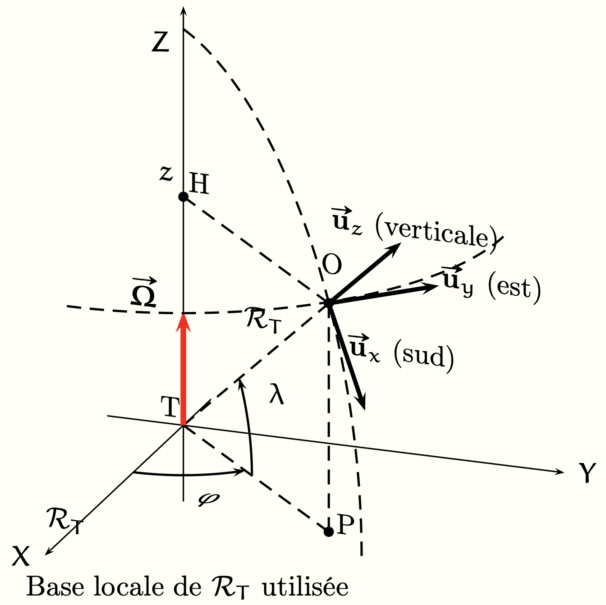

PrepOral
[MP] [Maison] [3]
Déviation vers l'Est
Enoncé
On étudie la chute d’un corps assimilé à un point matériel $M$ de masse $m$ dans un référentiel local $\mathcal{R}_T$ situé
à une latitude $\lambda$. Le corps est lâché sans vitesse initiale d’un point de coordonnées $(0, 0, h)$ avec $h = 300 \; m$.
On note $x(t)$, $y(t)$ et $z(t)$ ses coordonnées dans $\mathcal{R}_T$ en fonction du temps. On pose $\vec{\bf{g}} = -
g \bf{\vec{u_z}}$.
1. Écrire les équations du mouvement
2. Par un calcul en O.D.G., vérifier que la force de Coriolis est bien négligeable en première approximation.
Résoudre les équations du mouvement en négligeant $\vec{F}_{ic}$ ; on notera $x_0 (t)$, $y_0 (t)$ et $z_0 (t)$ les solutions obtenues.
Peut-on cependant prévoir qualitativement l’effet de la force de Coriolis ?
3. Pour tenir compte de la force de Coriolis, nous allons procéder de manière perturbative : pour cela, exprimer la
force de Coriolis sur la trajectoire non perturbée paramétrée par $(x_0 (t), y_0 (t), z_0 (t))$. Injecter cette forme dans les
équations du mouvement. Les intégrer pour trouver la trajectoire tenant compte au premier ordre de la force de Coriolis paramétrée
par $(x_1 (t), y_1 (t), z_1 (t))$. Que dire du résultat ? Application numérique pour une latitude correspondant à Nice
($\lambda=43,7 \; \text{°}$).

Commentaires
Encore jamais posé !
Corrigé
Le PFD donne :
$\begin{align*} \ddot x &= 2 \Omega \sin{\alpha} \dot y \\ \ddot y &= -2 \Omega(\sin{\alpha} \dot x+\cos{\alpha} \dot z) \\ \ddot z &= -g + 2 \Omega \cos{\alpha} \dot y \end{align*}$